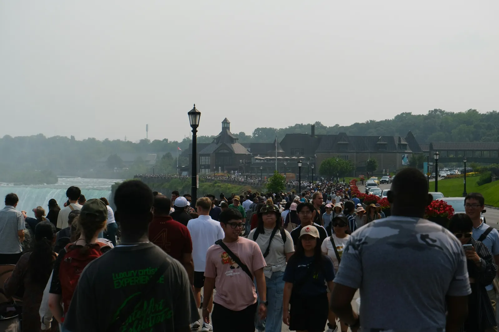

Deprem Anında Dışarıdaysanız: Açık Alan Güvenlik Rehberi
Deprem anında dışarıdaysanız, doğru konum seçimi hayatınızı kurtarabilir. Bu rehberde, açık alanlarda güvenliğinizi nasıl sağlayacağınızı öğreneceksiniz.
🏃♂️ İlk Adım: Açık Alana Yönelin
Deprem anında dışarıdaysanız binalardan, ağaçlardan ve devrilebilecek objelerden uzaklaşın. Açık alanlarda durmaya çalışın ve üzerinize düşebilecek her türlü nesneden kaçının.
1. Uzaklaşın
Binalardan en az 50 metre uzaklaşın
2. Açık Alan
Geniş, açık alanlara yönelin
3. Güvenli Pozisyon
Çömelin ve başınızı koruyun
⚠️ Tehlikeli Alanlardan Kaçının
Elektrik hatları, reklam panoları ve cam vitrinler gibi tehlike oluşturabilecek alanlardan uzak durmak hayati önem taşır.
- Elektrik direkleri ve hatları
- Reklam panoları ve tabelalar
- Cam vitrinler ve büyük pencereler
- Ağaçlar ve büyük bitkiler
- Köprüler ve üst geçitler
- Tüneller ve alt geçitler
👥 Kalabalık Alanlarda
Eğer kalabalık bir yerdeyseniz izdiham riskine karşı sakin ve kontrollü hareket edin. Asla koşmayın - bu hem sizi hem de diğerlerini tehlikeye atar.
🚨 Kalabalık Alan İpuçları
İzdiham: Kalabalıktan uzak durun, sakin hareket edin ve çıkış yollarını belirleyin.
Denge: Duvarlara veya sabit objelere tutunun, düşmemeye dikkat edin.
📱 Sarsıntı Sonrası
Sarsıntı geçtikten sonra:
- Artçı depremlere karşı tetikte olun
- Açık alanlarda toplanma bölgelerine gidin
- Yetkililerin uyarılarını takip edin
- Güvenli olduğundan emin olmadan binalara girmeyin